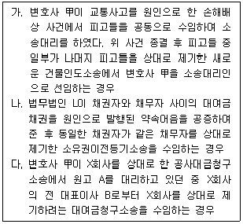
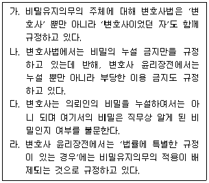
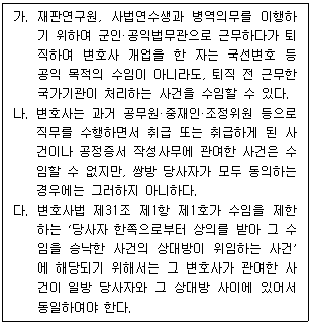
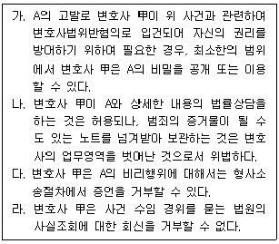
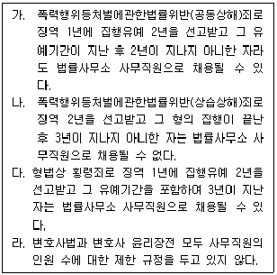

법조윤리 (2014-08-09 기출문제)
1과목: 임의 구분
1. 다음 중 수임이 가능한 경우를 모두 고른 것은?

- 가, 나
- 가, 다
- 나, 다
- 가, 나, 다
(정답률: 알수없음)

2. 변호사 甲의 다음 광고 중에서 허용되지 않는 것은?
- 케이블 TV에 '개인회생·파산/ 무료상담/ 甲 변호사 사무소'를 표시한 광고를 하였다.
- 생활정보지에 '소액사건에 관하여 소송물가액 1,000만 원 미만은 50만 원, 소송물가액 1,000만 원 이상 2,000만 원이하는 100만 원. 단 비용 및 부가가치세 별도'라는 광고를 하였다.
- 아파트 관리사무소가 지정한 아파트의 각 동 1층 게시판에 '사무소 소개, 주소 및 연락처'와 함께 '주요 수임사건의 사건번호'를 적시한 인쇄물을 1주일 동안 부착하였다.
- 지하철 역 내 대합실의 벽면에 '개인회생·파산/ 무료상담/ 甲 변호사 사무소'를 표시한 광고를 하였다.
(정답률: 알수없음)
3. 신축된 A아파트의 수분양자들은 분양대금을 지급하기 위해 분양받은 아파트를 담보로 B은행으로부터 대출을 받았다. 당시 수분양자들은 B은행이 제공하는 약관에 따라 분양받은 아파트에 관해 B은행 명의의 근저당권을 설정해 주었고 그 설정비용도 부담하였다. 변호사 甲은 근저당권설정비용을 수분양자들에게 부담시킨 약관이 무효임을 주장하여 근저당권설정비용반환청구소송을 제기하고자 A아파트의 수분양자들을 상대로 소송참여자를 모집하는 광고를 하려고 한다. 다음 중 소속 지방변호사회의 허가 없이도 허용되는 광고는?
- 인터넷에 개설된 변호사 甲의 블로그에 소송참여자의 모집을 위한 안내문을 게재하는 행위
- A아파트 관리사무소가 제공한 주민의 전화번호로 소송참여자의 모집을 위한 전화를 하는 행위
- A아파트 관리사무소가 제공한 주민의 전화번호로 소송참여자의 모집을 위한 문자 메시지를 발송하는 행위
- A아파트 각 가구에 소송참여자의 모집을 위한 안내 우편을 발송하는 행위
(정답률: 알수없음)
4. 변호사 또는 법무법인의 사건 수임에 관한 설명 중 옳은 것은? (다툼이 있는 경우에는 판례에 의함)
- 법무법인 L의 등기팀장인 법무사 A는 준정부기관에서 설치한 건설분쟁조정위원회의 조정위원으로서 위 기관과 B 사이의 분쟁에 대한 조정 업무를 했는데, B가 그 조정에 불복하여 제기한 소송을 법무법인 L이 수임할 수 있다.
- 변호사 甲은 수원시 선거관리위원회의 비상임위원으로 활동 중인데, 동 위원회가 지방선거 후보자 A를 공직선거법위반으로 고발한 사건을 변호사 甲이 소속되어 있는 법무법인 L이 수임할 수 있다.
- 공증인가 합동법률사무소의 변호사 甲이 수임하여 원고 대리를 하고 있는 소송사건에서, 위 사무소 소속의 변호사 乙은 甲과 계산을 같이 하고 있지 않는 한, 위 소송사건의 피고 대리 업무를 수임할 수 있다.
- 변호사 甲은 의뢰인 A로부터 근로복지공단을 상대로 한 요양불승인처분취소청구소송을 위임받고 소송대리 업무를 수행하는 중에 근로복지공단과 고문계약을 맺고 법률문제에 대한 자업무를 수행할 수 있다.
(정답률: 알수없음)
5. 변호사 보수에 관한 설명 중 옳지 않은 것은? (다툼이 있는 경우에는 판례에 의함)
- A와 B가 공동당사자로서 동일한 변호사 甲에게 소송대리를 위임한 경우, 이에 따른 A와 B의 보수지급채무는 특별한 사정이 없는 한 분할채무이다.
- 약정된 보수액이 부당하게 과다하여 신의성실 원칙이나 형평의 원칙에 반한다고 볼 만한 특별한 사정이 있는 경우, 예외적으로 상당하다고 인정되는 범위 내의 보수액만을 청구할 수 있는데, 위와 같은 특별한 사정의 부존재에 대한 증명책임은 약정된 보수액이 적정하다고 주장하는 변호사에게 있다.
- 선정당사자가 선정자로부터 별도의 수권 없이 변호사 보수에 관한 약정을 하였다면 선정자들이 이를 추인하는 등의 특별한 사정이 없는 한, 그 약정은 선정자에 대하여 효력이 없다.
- 민사소송에서 패소한 당사자는 원칙적으로 승소한 당사자가 지출한 소송비용을 부담하게 되는데, 이러한 소송비용 속에는 승소한 당사자가 변호사에게 지출한 보수도 일정 범위에서 포함된다.
(정답률: 알수없음)
6. 변호사 보수에 관한 설명 중 옳지 않은 것은? (다툼이 있는 경우에는 판례에 의함)
- 단순한 법률자문을 하는 경우에는 보수, 보수지급방법, 보수에 포함되지 않는 비용 등을 반드시 명확하게 약정할 필요는 없다.
- 소송위임계약과 관련하여 위임사무 처리 도중에 수임인의 귀책사유로 계약이 종료되었다 하더라도 위임인은 수임인이 계약 종료 당시까지 이행한 사무처리 부분에 관해서 수임인이 처리한 사무의 정도와 난이도, 사무처리를 위하여 수임인이 기울인 노력의 정도, 처리된 사무에 대하여 가지는 위임인의 이익 등 제반 사정을 참작하여 상당하다고 인정되는 보수 금액 및 사무처리 비용을 착수금 중에서 공제하고, 나머지 착수금만을 수임인으로부터 반환받을 수 있다.
- 변호사가 소송사건 위임을 받으면서 지급받는 착수금은 일반적으로 위임사무의 처리에 소요되는 비용 외에 보수 일부의 선급금 조로 지급받는 성질의 금원이다.
- 민사사건의 소송대리 업무를 위임받은 변호사가 그 소제기 전에 상대방에게 채무 이행을 최고하고 형사고소를 제기하는 등의 사무를 처리함으로써 위임인과 상대방 사이에 재판 외 화해가 성립되어 결과적으로 소송을 할 필요가 없게 된 경우, 위임인과 변호사 사이에 소제기에 의하지 아니한 사무처리에 관하여 명시적인 보수의 약정을 한 바 없다면 특별한 사정이 없는 한 위임인은 변호사에게 보수를 지급할 의무가 없다.
(정답률: 알수없음)
7. 다음 중 변호사의 수임제한규정에 위반되지 않는 것은?
- 변호사 甲은 소유권이전등기소송에서 원고로부터 사건을 수임한 다음에 원고의 동의 하에 피고로부터 그 사건을 수임하였다.
- 변호사 甲은 자신의 조카인 변호사 乙이 피고 대리인으로 선임된 사건에서, 의뢰인인 원고의 양해 없이 그로부터 사건을 수임하였다.
- 변호사 甲은 A의 수임인으로서 X회사를 상대로 하여 아파트 시공 하자 손해배상소송에서 승소확정판결을 받아 집행을 마쳤다. 그 후 A가 제기한 X회사의 주주총회결의부존재확인소송에서 A의 양해 하에 X회사로부터 사건을 수임하였다.
- 법무법인 L에 소속된 변호사 甲, 乙은 원고 A가 피고 B를 상대로 한 이혼소송에서 B의 양해 하에 각각 A와 B로부터 사건을 수임하였다.
(정답률: 알수없음)
8. 변호사의 수임제한에 관한 설명 중 옳지 않은 것은? (다툼이 있는 경우에는 판례에 의함)
- '당사자 한쪽으로부터 상의를 받아 그 수임을 승낙한 사건의 상대방이 위임하는 사건'에 관하여 변호사의 직무를 수행할 수 없도록 한 변호사법상 수임제한규정을 위반한 변호사의 소송행위는 상대방 당사자가 그와 같은 사실을 알았거나 알 수 있었음에도 불구하고 사실심 변론종결 시까지 아무런 이의를 제기하지 아니하였다면, 소송법상 완전한 효력이 생긴다.
- 변호사가 '공무원으로서 직무상 취급한 사건'에 관하여 그 직무를 수행할 수 없도록 한 변호사법상 수임제한규정은 공익적인 강행규정이다.
- 법원이 위 ①의 수임제한규정을 위반하여 국선변호인을 선정한 다음 그 국선변호인의 변론을 거쳐 심리를 마쳤다 하더라도 소송절차에 관한 법령 위반이 있다고 할 수 없다.
- 변호사는 사건을 수임하였을 때에는 소송위임장이나 변호인선임서 등을 해당 기관에 제출하지 아니하고는 전화, 문서, 방기타 방법으로 변론활동을 할 수 없다.
(정답률: 알수없음)
9. 변호사 甲은 손해배상청구사건을 수임하였다. 수임 당시 의뢰인은 甲에게 “피고는 현재 부동산은 없지만 은행에 많은 예금이 있고 내가 그 계좌번호를 아는데 판결을 받으면 강제집행을 하는 것은 문제없을 것이다. 다만, 자녀들이 모두 미국 시민권을 가지고 있어서 조만간 미국으로 영구 출국할 가능성이 있다. 그러니 빠른 시간 내에 판결을 받아서 손해배상을 받아야 한다.”라고 말하고 관련된 모든 서류를 제공하였다. 변호사 甲은 손해배상청구소송을 제기하여 제1심에서 가집행 선고부 승소판결을 받았다. 피고는 제1심 재판의 변론종결일 무렵 패색이 짙어지자 위 예금계좌의 예금을 모두 인출한 후 미국으로 영구 출국하였고, 이로 인해 강제집행이 불가능하게 되었다. 손해배상청구소송의 수임계약서에 위임의 범위는 '손해배상금 청구의 본안소송의 제기'라고만 기재되어 있었다. 변호사 甲의 의뢰인에 대한 손해배상책임 유무에 대한 설명 중 옳은 것은? (다툼이 있는 경우에는 판례에 의함)
- 손해배상책임이 있다. 민사소송법 제90조 제1항은 “소송대리인은 위임을 받은 사건에 대하여 반소·참가·강제집행·가압류·가처분에 관한 소송행위 등 일체의 소송행위와 변제의 영수를 할 수 있다.”라고 규정하고 있으므로, 가압류 등 보전처분을 하는 것이 위임계약의 내용이 되기 때문이다.
- 손해배상책임이 없다. 위임의 범위는 위임계약에 의하여 정해지기 때문에 보전처분은 위임의 범위에 포함되지 않고, 어떤 경우에도 위임의 범위를 넘어서서 의뢰인의 권리 옹호에 필요한 모든 조치를 취해야 할 의무가 변호사에게 있다고는 할 수 없기 때문이다.
- 손해배상책임이 있다. 가압류 등 보전처분을 해야 할 정황이 있고 그것이 매우 실효성이 있는 것이라면, 본안소송을 수임한 변호사는 그러한 방안을 의뢰인에게 설명하고 필요한 정보를 제공하는 등 법률적인 조언을 하여야 할 보호의무가 있는데도 이를 하지 않았기 때문이다.
- 손해배상책임이 없다. 피고가 은행예금을 인출할 가능성에 관하여 의뢰인이 변호사에게 구체적으로 경고하지 않았으므로 변호사에게 과실이 있다고 할 수 없기 때문이다.
(정답률: 알수없음)
10. A는 사기죄로 구속된 후 친구인 B에게 변호사 면담을 할 수 있게 해 달라고 부탁하였고, B의 요청을 받고 다음날 구치소로 접견 온 변호사 甲과 면담하고 그 자리에서 변호인선임계약을 체결하였다. A는 甲에게 착수금 500만 원을 지급하고, 이와 별도로 A가 석방되는 것을 조건으로 성공보수 500만 원을 지급하기로 약정하였다. 제1심 소송의 진행 중 A는 보석보증금 500만 원을 납입한 후 보석으로 석방되고 그 후 집행유예 판결을 받았으며 그 판결이 확정되었다. 이에 관한 설명 중 옳은 것은? (다툼이 있는 경우에는 판례에 의함)
- 변호인선임계약은 효력이 없다. 의뢰인이 구속되어 심리적으로 위축된 상태에서 변호사 甲과 체결한 선임계약으로서 계약 내용 형성의 자유가 침해되었기 때문이다.
- 만약 A가 변호사 甲과 변호인선임계약을 체결한 것이 아니라 친구인 B가 A로부터 부탁을 받아 변호사 甲과 변호인선임계약을 체결하고 B 명의로 변호인선임서를 법원에 제출하였다면, 변호사 甲은 형사소송절차에서 A의 변호인으로서 활동할 수 없다.
- A와 변호사 甲 사이의 성공보수 약정은 부적절하다. 형사사건의 변호인선임계약에서는 성공보수 약정이 허용되지 않기 때문이다.
- 변호사 甲은 A가 성공보수를 지급하지 아니하더라도 사전의 약정 없이는 성공보수채권과 A에게 반환하여야 할 보석보증금을 서로 상계할 수 없다.
(정답률: 알수없음)
11. A는 변호사 甲에게 민사사건의 처리를 위임하였는데, 변호사 甲의 사무직원과 마찰이 생기자 변호사 甲에 대한 위임계약을 해지하려고 한다. 이에 관한 설명 중 옳지 않은 것은?
- A는 변호사 甲의 사건 처리에는 아무런 불만이 없더라도 위임계약을 해지할 수 있다.
- A가 변호사 甲이 불리한 시기에 위임계약을 해지한 것이 아닌 한 위임계약 해지로 인하여 변호사 甲에게 발생한 손해를 배상할 책임이 없다.
- 변호사 甲은 A와 사무직원과의 마찰이 사소한 것이고 사건의 처리에 아무런 지장이 없는 경우라면 A의 일방적인 위임계약 해지를 수용하지 않을 수 있다.
- 변호사 甲은 위임계약이 해지되기 전에 행한 수임사무의 처리 비용을 A에게 청구할 수 있다.
(정답률: 알수없음)
12. 다음 중 변호사법 위반으로 형사처벌을 받는 경우가 아닌 것은? (다툼이 있는 경우에는 판례에 의함)
- 법원 직원 A는 사례비를 받기로 하고 당사자를 대신하여 부동산에 대한 근저당권 실행을 위한 경매사건의 기일 연기나 취하를 경매신청인에게 부탁하고, 그 명의의 경매신청 취하서를 작성·제출하였다.
- 손해사정사 B는 교통사고 피해자들을 대신하여 보험회사와 접촉하여 손해액 결정요인들에 대하여 절충을 하고 피해자들로 하여금 보험회사와 합의할 수 있도록 주선하고 수수료를 받았다.
- 법무사 사무직원 C는 자신의 독자적인 책임과 별도의 계산 하에 경매부동산의 매수희망자를 위하여 입찰가격을 결정해주고 입찰표를 작성해주는 등 사실상 대리하고 수수료를 받았다.
- 교통사고 분석 전문가 D는 친구로부터 자신이 당한 교통사고 원인 분석을 부탁받아 관련 분석 보고서를 작성해 주고 현장 및 실물 촬영비용, 식비 등 기초적인 비용을 받았다.
(정답률: 알수없음)
13. 이혼소송 의뢰인 A는 재산분할로써 자신 명의의 아파트 3채를 자신의 몫으로 하고, 은행예금은 배우자 B에게 넘겨주려고 생각한다. A는 변호사 甲에게 성공보수로 그 중 1채의 아파트를 주겠다고 약정한 후 소송계속 중에 미리 소유권을 이전해 주었다. 이에 대한 설명 중 옳은 것은? (다툼이 있는 경우에는 판례에 의함)
- 성공보수의 조건부 선 수령에 해당하여 변호사 윤리장전 위반이다.
- 이전받은 아파트의 가액이 지나치게 과다한 경우 성공보수 약정은 전부 무효이다.
- 이혼 및 재산분할 소송의 경우에는 성공보수 약정이 금지되므로 변호사법 위반이다.
- 변호사법 위반 여부와 상관없이 성공보수 약정은 원칙적으로 유효하다.
(정답률: 알수없음)
14. 변호사 甲은 A로부터 이혼소송을 수임하여 법정에 출석하고 있었다. A는 여러 해 동안 남편 B로부터 심한 구타를 당하고 있어 이것을 사유로 이혼소송을 변호사 甲에게 의뢰한 것이다. A는 주민등록지를 떠나 거주하고 있으며 B를 비롯한 다른 사람들에게 실거주지를 숨기고 있었다. B는 A의 실거주지를 알려고 여러 사람에게 물었으나 성과가 없자 변론을 마치고 사무실로 복귀하는 甲을 따라와 A의 실거주지를 문의하였다. 甲은 처음에는 답변을 거절하다가 B가 사과를 하려고 한다며 집요하게 요구하므로 별일 없으리라 믿고서 A의 실거주지를 B에게 알려 주었다. B는 그 뒤 실거주지로 찾아가 A에게 약 8주간의 치료가 필요한 상해를 가하였다. 이에 관한 설명 중 옳지 않은 것은?
- 변호사가 그 직무처리 중 지득한 타인의 비밀을 누설한 경우에 해당되므로 변호사 甲은 형법상 업무상비밀누설죄로 처벌받을 수 있다.
- 변호사는 그 직무상 알게 된 비밀을 누설하여서는 아니 되므로 변호사 甲은 변호사법에 의해서 형사처벌을 받을 수 있다.
- 변호사는 비밀을 유지할 의무를 부담하고 비밀을 누설하는 경우 변호사법을 위반한 것이므로 변호사 甲은 변호사법에 따라 징계를 받을 수 있다.
- 의뢰인 A의 동의가 있는 경우 직무상 알게 된 의뢰인의 비밀을 최소한의 범위에서 제3자에게 알리더라도 변호사 윤리장전을 위반한 것이 아니므로 변호사 甲은 변호사법에 따라 징계를 받지 않는다.
(정답률: 알수없음)
15. 비밀유지의무에 관한 설명 중 옳은 것을 모두 고른 것은?

- 가, 나
- 가, 라
- 나, 다
- 나, 라
(정답률: 알수없음)
16. 변호사의 비밀유지의무에 관한 설명 중 옳지 않은 것은?
- 법무법인의 구성원 변호사 및 소속 변호사는 다른 변호사가 의뢰인과 관련하여 직무상 비밀유지의무를 부담하는 사항을 알게 된 경우, 정당한 이유가 없는 한 이를 누설하거나 이용하여서는 아니 된다.
- 변호사법에서 변호사의 비밀유지의무는 의뢰인과의 관계에서는 의무로, 국가기관과 제3자 등과의 관계에서는 권리로 규정되어 있다.
- 형사소송법은 변호사가 업무상 알게 된 비밀에 대한 증언거부권을 규정하고 있다.
- 민사소송법은 변호사가 업무상 알게 된 비밀에 대한 증언거부권 뿐 아니라 문서제출거부권도 규정하고 있다.
(정답률: 알수없음)
17. 다음 설명 중 변호사의 비밀유지의무가 해제되는 경우가 아닌 것은?
- 위임받아 처리한 소송이 종료된 후 의뢰인이 사망한 경우
- 변호사가 의뢰인을 대리하여 처리한 사건과 관련하여 기소되거나 징계절차에 회부되어 자기방어를 하는 경우
- 중대한 공익상의 이유가 있거나 의뢰인의 동의가 있는 경우
- 변호사가 의뢰인을 상대로 보수청구소송을 하는 경우
(정답률: 알수없음)
18. 수임제한에 관한 설명 중 옳지 않은 것은? (다툼이 있는 경우에는 판례에 의함)
- 형사사건의 피해자인 당사자를 위한 민사사건에서 소송대리인으로서 소송행위를 한 변호사가 나중에 실질적으로 동일한 쟁점을 포함하고 있는 형사사건에서 피고인을 위한 변호인으로 선임되어 변호활동을 하는 것은 금지되므로, 그 형사사건의 피고인이 스스로 위 변호사를 변호인으로 선임하였더라도 다른 특별한 사정이 없는 한 변호인의 조력을 받을 피고인의 권리는 침해된 것이다.
- 당사자 일방으로부터 상의를 받아 그 수임을 승낙한 사건의 상대방이 위임하는 사건의 경우, 변호사가 그와 같은 사건에 관하여 직무를 행하는 것은 먼저 그 변호사를 신뢰하여 상의를 하고 사건을 위임한 당사자 일방의 신뢰를 배반하게 되고, 변호사의 품위를 실추시키게 되기 때문에 변호사의 직무행위가 금지된다.
- 변호사가 관여한 사건이 일방 당사자와 그 상대방 사이에 있어서 동일한지 여부는 상반되는 이익의 범위에 따라서 개별적으로 판단되어야 하는 것이고, 소송물이 동일한지 여부나 민사사건과 형사사건 사이와 같이 그 절차가 같은 성질의 것인지 여부는 관계가 없다.
- 형사사건의 변호인으로 선임된 법무법인의 구성원 변호사가 업무담당 변호사로서 업무를 수행한 바 있었음에도, 같은 쟁점을 가진 민사사건이 그 이후 제기되자 위 형사사건의 피해자를 위한 소송대리인으로서 직무를 수행하는 것은 금지되고, 위 법무법인이 해산된 이후라도 변호사 개인의 지위에서 그와 같은 민사사건을 수임하는 것도 금지된다.
(정답률: 알수없음)
19. 변호사와 의뢰인 간의 보수 약정에 관한 설명 중 옳지 않은 것은? (다툼이 있는 경우에는 판례에 의함)
- 당사자들 사이에 성공보수의 약정을 하면서 전 심급을 통하여 최종적으로 승소한 금액의 일정 비율을 성공보수로 지급하기로 한 경우, 1심 승소 후 항소심 계속 중 변호사의 귀책사유로 수임계약이 해지되었다면 그 후 최종적으로 승소하였더라도 성공보수를 청구할 수 없다.
- 제1심에 대한 성공보수 약정에 따른 변호사의 성공보수청구권 발생 시기는 특약이 없는 한 승소판결이 확정된 때가 아니라 1심 판결을 송달받은 때이다.
- 변호사는 사건 또는 사무를 수임할 때에는 보수에 관한 명백한 약정을 하고 가급적 이를 서면으로 체결하여야 한다.
- 약정된 보수액이 부당하게 과다하여 신의성실의 원칙이나 형평의 원칙에 반한다고 볼 만한 특별한 사정이 있는 경우에는 의뢰인과의 평소 관계, 사건 수임의 경위, 착수금의 액수, 사건 처리의 경과와 난이도, 노력의 정도, 소송물 가액 및 의뢰인이 승소로 인하여 얻게 된 구체적 이익 등 기타 변론에 나타난 제반 사정을 고려하여 상당하다고 인정되는 범위 내의 보수액만을 청구할 수 있다.
(정답률: 알수없음)
20. 법관과 검사의 직업윤리에 관한 설명 중 옳은 것은?
- 법관은 어떠한 경우에도 구체적 사건에 관하여 공개적으로 논평하거나 의견을 표명할 수 없다.
- 법관은 당사자와 대리인 등 소송관계인을 법정 이외의 장소에서 면담하거나 접촉하는 것이 항상 금지된다.
- 검사는 법무부장관의 허가를 받아 금전상의 이익을 목적으로 하는 업무에 종사할 수 있다.
- 검사는 소속 기관장의 승인을 받으면 수사 등 직무와 관련된 사항에 관하여 검사의 직함을 사용하여 대외적으로 그 내용을 발표할 수 있다.
(정답률: 알수없음)
2과목: 임의 구분
21. 이익충돌로 인한 수임의 제한 등에 관한 설명 중 옳지 않은 것은?
- 변호사는 위임사무가 종료된 종전 사건의 대립되는 당사자가 선임을 요청하는 사건이, 종전 사건과 실질적으로 동일하지 않고 종전 의뢰인이 양해한 경우에는 수임이 가능하다.
- 변호사는 현재 수임하고 있는 사건과 이해가 충돌하는 사건의 경우, 관계되는 의뢰인들이 모두 동의하고 의뢰인의 이익이 침해되지 않는다는 합리적인 사유가 있는 경우에는 수임이 가능하다.
- 의뢰인과 이해관계가 대립되는 상대방으로부터 사건의 수임을 위해 먼저 상담하였으나 결국 수임에 이르지 아니한 경우, 위 상대방의 양해를 얻는 경우에 한하여 의뢰인으로부터 수임이 가능하다.
- 법무법인의 특정 변호사가 겸직하고 있는 정부기관의 사건은 당해 변호사가 사건의 수임 및 업무수행에 관여하지 않고 그러한 사유가 법무법인 등의 사건처리에 영향을 주지 아니할 것이라고 볼 수 있는 합리적 사유가 있는 경우에 한하여 수임이 가능하다.
(정답률: 알수없음)
22. 다음 설명 중 옳은 것을 모두 고른 것은?

- 가
- 다
- 가, 다
- 가, 나, 다
(정답률: 알수없음)
23. X회사의 직원 A는 비리 혐의로 회사로부터 감사를 받았다. A는 이에 대한 법률상담을 받기 위해 변호사 甲을 방문하여 자신이 그동안 저질렀던 위법행위에 대해 상세히 털어 놓으면서 이를 기록해 둔 노트를 甲에게 맡겼다. 그리고 사건의 위임에 대해서는, 수사를 받게 되는 동안에는 변호인선임서를 제출하지 않은 상태에서 비공식적으로 자신을 변호 내지 조언해 주고, 기소되면 변호인선임서를 제출하여 정식으로 변호해 줄 것을 요구하였고, 甲은 이러한 요구를 그대로 받아들이는 수임계약을 체결하였다. 이에 대한 설명으로 옳은 것을 모두 고른 것은?

- 가, 다
- 가, 라
- 가, 나, 다
- 나, 다
(정답률: 알수없음)
24. 변호사 甲은 의뢰인인 피고인 A를 접견하던 중 A로부터 수사기관과 법원에는 B의 범행을 감추려고 자신이 저질렀다는 취지로 허위 자백을 하였다는 말과 함께 자신만 유죄판결을 받도록 도와 달라는 요청을 받았다. 변호사 甲은 A를 돕는 것이 형사변호인으로서 본래의 의무라고 생각하고 허위 자백을 계속 유지하는 입장에서 변호하려고 하고 있다. 나아가 A는 B와 허위 자백을 대가로 하는 거래가 진행 중이라고 하면서 그 거래가 성사되도록 도와달라고 했다. 이에 관한 설명 중 옳지 않은 것은? (다툼이 있는 경우에는 판례에 의함)
- 원칙적으로 형사변호인의 기본적인 임무는 피고인을 보호하고 그 이익을 대변하는 것이지만 그 이익은 법적으로 보호받을 가치가 있는 정당한 이익으로 제한된다.
- 변호사의 비밀유지의무는 변호사가 업무상 알게 된 비밀을 다른 곳에 누설하지 않을 소극적 의무를 말한다.
- 변호사 甲이 적극적으로 허위의 진술을 하거나 허위 진술을 하도록 하는 것은 A의 결의를 강화하게 하는 행위로서 범인도피의 방조행위가 될 수 있다.
- 변호사 甲이 그 후 A를 위하여 부정한 거래가 성사되도록 돕는 등 A와 B의 거래에 깊숙이 관여하였더라도 이는 A의 이익을 위한 것으로서 정당한 변론권의 범위에 속한다.
(정답률: 알수없음)
25. 변호사법상 징계에 관한 설명 중 옳지 않은 것은?
- 징계의 종류에는 영구제명, 제명, 3년 이하의 정직, 3천만 원 이하의 과태료 및 견책이 있다.
- 징계혐의사실을 1차 심의·의결하기 위하여 지방변호사회에 변호사징계위원회를 둔다.
- 직무와 관련이 없는 행위로도 징계를 받을 수 있다.
- 의뢰인이나 의뢰인의 법정대리인 등의 청원이 있는 경우, 지방변호사회의 장은 지체 없이 징계 개시의 신청 여부를 결정하여야 한다.
(정답률: 알수없음)
26. 변호사 甲은 법원에 의하여 피고인 A에 대한 상해사건의 국선변호인으로 선정되어 사건기록을 복사한 후 검토하였다. 기록에 의하면 A가 B를 때려 약 6주간의 치료가 필요한 상해를 가하였고 이에 대해 A도 자백하였으며, 참고인 C, D도 모두 동일한 취지로 진술하였다. 이에 변호사 甲은 이 사건이 단순 상해사건으로서 피고인도 자백하고 목격자도 있으므로 쉽게 끝날 사건이라고 생각하고 구치소를 방문하여 A를 접견하였다. 그런데 A는 수사기관에서의 자백은 강압수사에 의한 허위 자백이고, 참고인들의 진술도 모두 자신을 모함하기 위한 허위 진술이라고 주장하면서 甲에게 위와 같은 날조 사실들을 모두 밝혀서 자신이 무죄판결을 받을 수 있도록 도와 달라는 요청을 하였다. 이 경우 甲의 행위에 대한 설명 중 옳은 것은?
- 변호사 甲이 A에 대한 국선변호 활동을 하는 과정에서 충실한 변호를 위하여 불가피하게 추가적인 비용을 지출하더라도 법원이 아닌 A나 그 가족에게 별도로 그 비용을 청구하는 것은 허용되지 아니한다.
- 국선변호인의 보수로는 A의 요구사항에 따른 충실한 변론이 어렵다고 말하면서, 변호사 甲이 A를 설득하여 다른 변호사를 사선변호인으로 선임하도록 함으로써 보다 충실한 변론이 이루어질 수 있도록 하는 것은 허용된다.
- 변호사 甲이 A에게 국선변호인으로서의 변호활동에는 한계가 있다고 말하는 등의 방법으로 A로 하여금 자신을 사선변호인으로 선임하도록 유도하는 것은 허용된다.
- 국선변호인과 사선변호인은 수임 경위와 보수 수준 등이 달라 변호활동의 범위나 피고인 보호의 정도 등에 사실상 차이가 있을 수밖에 없으므로, 변호사 甲이 A에게 자신은 국선변호인이기 때문에 A의 요청을 모두 들어줄 수 없다며 거절하는 것은 허용된다.
(정답률: 알수없음)
27. 변호사의 주의의무 및 책임에 관한 설명 중 옳지 않은 것은? (다툼이 있는 경우에는 판례에 의함)
- 위임사무의 종료 단계에서 패소판결이 있었던 경우에는 의뢰인으로부터 상소에 관하여 특별한 수권이 없는 때에도 그 판결을 점검하여 의뢰인에게 그 판결의 내용과 상소하는 때의 승소 가능성 등에 대하여 구체적으로 설명하고 조언하여야 할 의무가 있다.
- 변호사는 의뢰인과 변호인선임계약을 체결한 이후 뿐 아니라 그 계약 체결 과정 및 준비 단계에도 주의의무를 부담한다.
- 의뢰인의 지시가 의뢰인에게 불리한 경우에 변호사는 그런 사실을 의뢰인에게 알려 주어야 할 의무가 있지만, 그와 같은 지시라 하더라도 의뢰인의 명시적인 지시에 대해 그 변경을 요구 또는 권고하여서는 아니 된다.
- 변호사 사무실 직원이 의뢰인에게 상고제기기간을 잘못 고지하는 바람에 의뢰인이 상고제기기간을 도과하여 상고의 기회를 잃게 된 경우, 변호사는 이로 인하여 의뢰인이 입은 손해를 배상할 책임이 있다.
(정답률: 알수없음)
28. 외국법자문사에 관한 설명 중 옳지 않은 것은?
- 외국법자문사로서 업무를 수행하려는 사람은 법무부장관에게 자격승인을 받아 대한변호사협회에 등록하여야 한다.
- 외국법자문사의 자격승인을 받기 위하여는 외국변호사의 자격을 취득한 후 원자격국에서 3년 이상 법률사무를 수행한 경력이 있어야 한다.
- 자유무역협정의 당사국에 본점사무소가 설립·운영되고 있는 외국법자문법률사무소는 대한변호사협회에 공동사건 처리 등을 위한 등록을 마친 후 국내 법률사무소 또는 법무법인과 사안별 개별 계약에 따라 국내법사무와 외국법사무가 혼재된 법률사건을 공동으로 처리하고 수익을 분배할 수 있다.
- 외국법자문사는 2개의 외국법자문법률사무소, 법률사무소, 법무법인, 법무법인(유한) 또는 법무조합에 동시에 고용되어 업무를 처리할 수 있다.
(정답률: 알수없음)
29. 변호사법상 공직퇴임변호사에 관한 설명 중 옳지 않은 것은?
- 장기복무 군법무관으로 근무하다가 퇴직하여 변호사 개업을 한 자는 퇴직 전 2년부터 퇴직한 때까지 근무한 국가기관이 처리하는 사건을 퇴직한 날로부터 2년간 수임할 수 없다.
- 공직퇴임변호사에 대한 수임제한규정은 공직퇴임변호사가 법무법인의 담당변호사로 지정되는 경우에도 적용된다.
- 공직퇴임변호사는 퇴직일부터 2년 동안 수임한 사건에 관한 수임자료와 처리 결과를 소속 지방변호사회에 제출하여야 한다.
- 법조윤리협의회 위원장은 공직퇴임변호사에게 위법의 혐의가 있는 것을 발견하였을 때에는 지방검찰청 검사장에게 수사를 의뢰할 수 있다.
(정답률: 알수없음)
30. 변호사의 징계에 관한 설명 중 옳지 않은 것은?
- 대한변호사협회 변호사징계위원회의 위원장은 징계심의의 기일을 정하고 징계혐의자에게 출석을 명할 수 있고, 징계혐의자는 징계심의기일에 출석하여 구술 또는 서면으로 자기에게 유리한 사실을 진술하거나 필요한 증거를 제출할 수 있다.
- 징계의 청구는 징계 사유가 발생한 날부터 3년이 지나면 하지 못한다.
- 징계혐의자가 징계결정의 통지를 받은 후 법규정에 따른 이의신청을 하지 아니하면 이의신청 기간이 끝난 날부터 대한변호사협회 변호사징계위원회의 징계 효력이 발생한다.
- 대한변호사협회 변호사징계위원회의 징계 결정에 불복하는 징계혐의자는 행정소송법으로 정하는 바에 따라 그 통지를 받은 날부터 90일 이내에 행정법원에 소를 제기할 수 있다.
(정답률: 알수없음)
31. 변호사에 관한 설명 중 옳지 않은 것은? (다툼이 있는 경우에는 판례에 의함)
- 변호사의 활동은, 자유로운 광고·선전활동을 통하여 영업의 활성화를 도모하며 인적·물적 영업기반을 자유로이 확충하여 효율적인 방법으로 최대한의 영리를 추구하는 것이 허용되는 상인의 영업활동과는 본질적으로 차이가 있다.
- 변호사의 직무수행으로 인하여 발생한 수익은 소득세법상 사업소득으로 보아 과세대상이 된다.
- 변호사는 상법상 당연상인이라고 볼 수는 없지만, 의제상인에는 해당한다.
- 법무법인의 설립등기는 '상호' 등을 등기사항으로 하는 상법상 회사의 설립등기나 개인 상인의 상호등기와 동일시할 수 없다.
(정답률: 알수없음)
32. 변호사법 위반으로 형사처벌을 받는 경우가 아닌 것은?
- 변호사가 수임하고 있는 사건에 관하여 상대방으로부터 이익을 받거나 이를 요구 또는 약속하는 행위
- 변호사 아닌 자가 변호사를 고용하여 법률사무소를 개설·운영하는 행위
- 수임하고 있는 사건의 상대방이 위임하는 다른 사건을 의뢰인의 동의 없이 수임하는 행위
- 변호사의 업무에 관하여 거짓된 내용을 표시하는 광고를 하는 행위
(정답률: 알수없음)
33. 다음 설명 중 옳은 것을 모두 고른 것은?

- 가, 다
- 가, 라
- 나, 다
- 나, 라
(정답률: 알수없음)
34. 사내변호사에 대한 설명 중 옳지 않은 것은?
- 사내변호사는 변호사윤리의 범위 안에서 그가 속한 단체 등의 이익을 위하여 성실히 업무를 수행한다.
- 개업 중인 변호사가 주식회사의 사내변호사가 되려면 소속 지방변호사회의 허가를 받아야 한다.
- 사내변호사도 그 직무를 수행할 때 독립성을 유지하여야 하므로, 자신의 직업적 양심과 전문적 판단에 따라 업무를 성실히 수행한다.
- 휴업 중인 변호사는 사내변호사가 될 수 없다.
(정답률: 알수없음)
35. 다음 설명 중 옳은 것은? (다툼이 있는 경우에는 판례에 의함)
- 비변호사는 변호사가 아니면 할 수 없는 업무를 통하여 보수나 그 밖의 이익을 변호사와 분배할 수 없지만, 변호사는 비변호사와 보수를 분배할 수 있다.
- 비변호사가 변호사를 고용하여 법률사무소를 개설 또는 운영하는 행위는 변호사법 위반으로서 형사처벌의 대상이지만, 비변호사에게 고용된 변호사는 비변호사의 변호사법 위반에 대한 공범으로 처벌되지 않는다.
- 변호사 자격에 의하여 변리사 등록을 한 변호사가 다른 변리사와 공동 사업자로 등록하여 특허변리업무를 처리하는 형태의 동업은 허용된다.
- 회계법인에 고용된 변호사는 소속 지방변호사회의 허가를 받아도 회계법인의 명의가 아닌 변호사의 명의로 법률사무를 처리하는 것이 허용되지 않는다.
(정답률: 알수없음)
36. 부동산 컨설팅 회사인 X주식회사가 사내변호사 甲을 고용한 후 회사 인터넷 홈페이지에 일반인들을 대상으로 한 유료 법률상담 코너를 개설하여 甲으로 하여금 온라인 상담을 하게 하였다. 그로 인한 상담료는 X주식회사의 수입으로 하였다. 이와 관련한 설명 중 옳은 것은?
- 변호사 자격을 가진 甲이 법률상담을 하였으므로 X주식회사가 상담료를 받더라도 적법하다.
- 상담료 수입 중 일정 금액을 甲에게 수당 명목으로 지급한다면 적법하다.
- 변호사 甲 명의로 답변을 하였다면 적법하지만 X주식회사 명의로 답변하였다면 변호사법에 위반된다.
- X주식회사 명의로 답변을 하든, 변호사 甲 명의로 답변을 하든 변호사법에 위반된다.
(정답률: 알수없음)
37. 변호사 甲은 형사사건으로 재판을 받고 있는 피고인 A의 변호인이다. 다음 중 변호사의 비밀유지의무에 관한 윤리규범을 위반한 경우는?
- 변호사 甲은 A의 형사사건 관련 직무를 수행하는 과정에서 작성하였던 메모를, A의 동의를 받고 방송사에 제공하였다.
- 변호사 甲은 A의 형사재판 진행 중 A가 추가 선임한 변호사 乙의 요청을 받고 A의 동의 없이 사건 기록 전부를 그에게 교부하였다.
- 변호사 甲은 법학전문대학원의 교수인 P가 현재 진행 중인 A의 형사재판기록을 이용하여 모의재판 수업을 진행하고자 한다면서 재판기록의 등사를 요청하자 A의 동의를 받지 않고 그에 응하였다.
- 변호사 甲은 A의 형사재판을 준비하기 위해서 같은 법무법인의 변호사 乙이 기록을 봐야 할 필요가 있다고 생각하여 교부해 주었다.
(정답률: 알수없음)
38. 다음 설명 중 옳지 않은 것은?
- 변호사 甲은 검사 재직시 A가 사문서위조 등 혐의로 B를 고소한 사건을 수사하여 불기소처분하면서 A를 무고죄로 기소하였고, 그 후 A의 무고사건 재판 과정에서 B가 허위 증언하자 B에 대하여 위증 혐의로 수사하던 중 퇴직하였다. 변호사 개업 후 甲은 B로부터 위의 위증사건을 변호하여 달라는 요청을 받은 경우 위 사건을 수임할 수 없다.
- 변호사 甲은 공정거래위원회 위원으로 재직하면서 심의한 X회사의 담합행위와 관련하여 X회사와 대표이사가 공정거래법 위반 혐의로 검찰에 고발된 후 퇴직하였다. 이 경우 퇴직한 甲이 소속된 법무법인 L은 위 공정거래법 위반에 대한 형사사건을 수임할 수 없다.
- 변호사 甲은 대법원 재판연구관으로 근무할 당시 특허등록무효사건의 기록을 검토한 바 있는데, 퇴직 후 위 특허등록무효사건의 한 쪽 당사자가 제기한 특허침해를 원인으로 한 손해배상청구소송에서 피고측으로부터 수임할 수 없다.
- 변호사 甲은 자신이 A법원의 형사항소부 판사로 재직하던 때 그 재판부에 배당된 사건 중 퇴직 당시 공판기일이 이미 지정된 사건을 수임할 수는 없지만, 공판기일이 지정되지 않았던 사건은 수임할 수 있다.
(정답률: 알수없음)
39. 변호사 甲은 법관으로 5년간 재직하다가 2014. 2. 9. 사직하고 변호사 개업을 하여 사무실을 운영하고 있는데, 금년 상반기에 민사사건 20건, 형사사건 11건을 수임하였다. 변호사 甲이 수임한 사건에 대한 설명 중 옳지 않은 것은?
- 甲은 상반기에 수임한 사건에 관한 수임자료를 2014. 7. 31.까지 소속 지방변호사회에 제출하여야 한다.
- 위 수임사건 31건에 관하여 제출할 수임자료의 기재사항에는 보수액도 포함된다.
- 형사사건 11건에 관하여는 인신구속 여부 및 그 변경사항도 수임자료의 기재사항에 포함된다.
- 甲이 사직할 당시 소속되었던 법원에 대응하는 검찰청에서 수사 중인 사건을 수임하였다면 변호사법의 수임제한규정에 위반된다.
(정답률: 알수없음)
40. 변호사의 공익활동에 대한 설명 중 옳지 않은 것은?
- 변호사가 정당한 사유 없이 공익활동 시간을 완수하지 못한 때는 징계사유에 해당한다.
- 조합형 합동법률사무소는 소속 변호사 전원을 위한 공익활동수행변호사를 지정할 수 있다.
- 개인에 대한 변호는 무료라고 할지라도 대한변호사협회 또는 지방변호사회가 인정하여야 공익활동에 해당한다.
- 상당한 보수를 받았다고 하여도 법령에 근거하여 관공서로부터 위촉받은 사항에 관한 활동을 한 것이라면 공익활동에 해당한다.
(정답률: 알수없음)